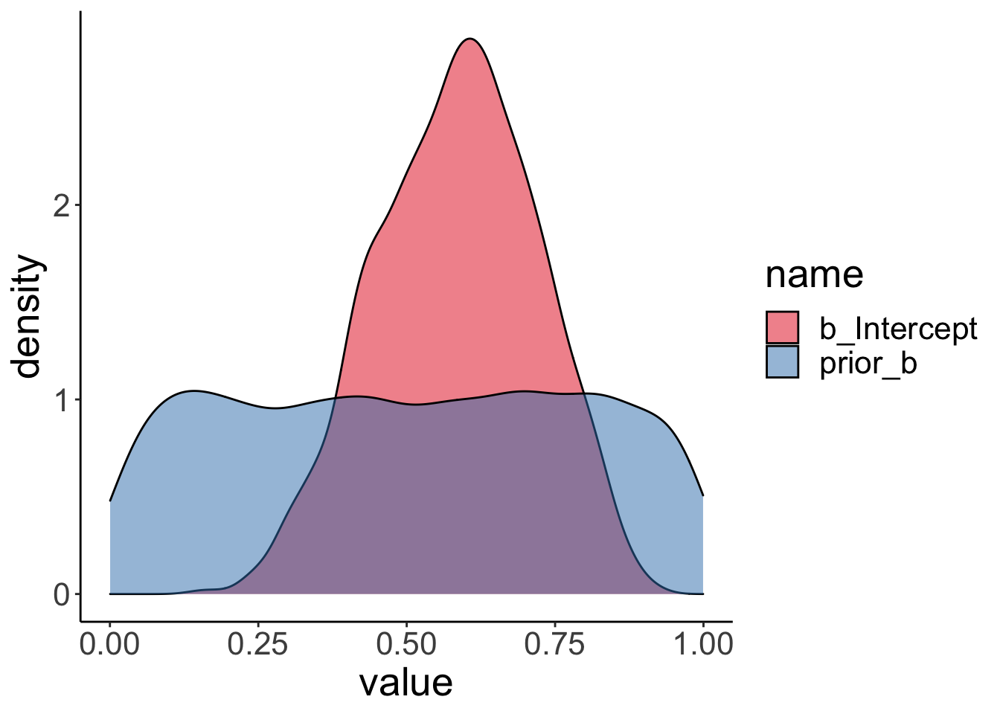
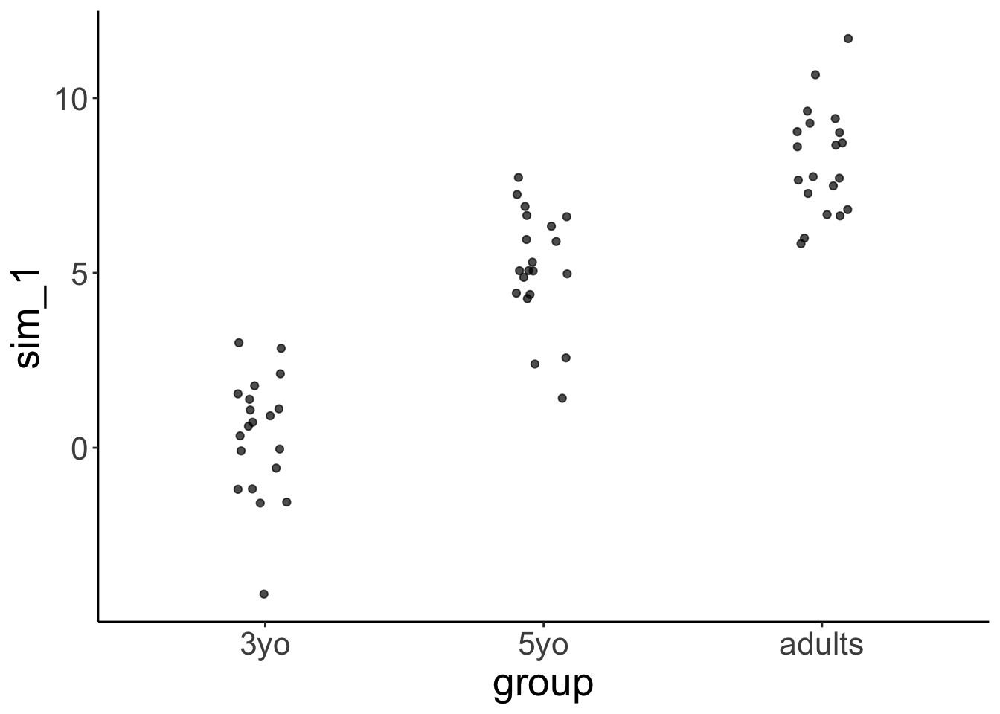
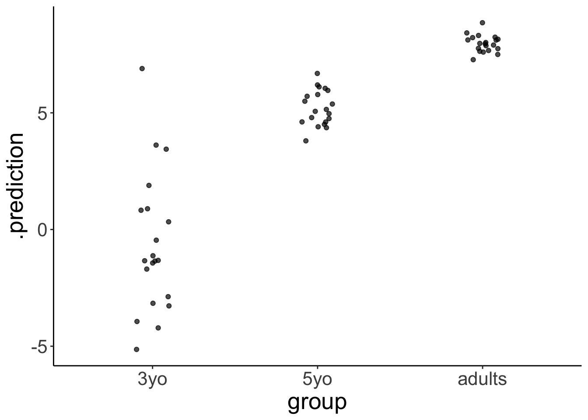

Chapter 24 Bayesian data analysis 4
24.1 Learning goals
- Evidence for null results.
- Dealing with unequal variance.
- Zero-one inflated beta binomial model.
- Ordinal logistic regression.
24.2 Load packages and set plotting theme
library("knitr") # for knitting RMarkdown
library("kableExtra") # for nice RMarkdown tables
library("janitor") # for cleaning column names
library("modelr") # for doing modeling stuff
library("tidybayes") # tidying up results from Bayesian models
library("brms") # Bayesian regression models with Stan
library("rstanarm") # for Bayesian models
library("patchwork") # for making figure panels
library("ggrepel") # for labels in ggplots
library("broom") # for tidying things up
library("gganimate") # for animations
library("GGally") # for pairs plot
library("patchwork") # for figure panels
library("bayesplot") # for visualization of Bayesian model fits
library("ggeffects") # for showing marginal/conditional effects
library("scales") # for percent y-axis
library("tidyverse") # for wrangling, plotting, etc. 24.3 Evidence for the null hypothesis
See this tutorial and this paper (Wagenmakers et al. 2010) for more information.
24.3.1 Fit the model
- Define a binomial model
- Give a uniform prior
beta(1, 1) - Get samples from the prior
24.3.2 Visualize the results
Visualize the prior and posterior samples:
fit.brm0 %>%
posterior_samples(pars = "b") %>%
pivot_longer(cols = everything()) %>%
ggplot(mapping = aes(x = value,
fill = name)) +
geom_density(alpha = 0.5) +
scale_fill_brewer(palette = "Set1")
24.3.3 Hypothesis test
We test the H0: \(\theta = 0.5\) versus the H1: \(\theta \neq 0.5\) using the Savage-Dickey Method, according to which we can compute the Bayes factor like so:
\(BF_{01} = \frac{p(D|H_0)}{p(D|H_1)} = \frac{p(\theta = 0.5|D, H_1)}{p(\theta = 0.5|H_1)}\)
## Hypothesis Tests for class b:
## Hypothesis Estimate Est.Error CI.Lower CI.Upper Evid.Ratio
## 1 (Intercept)-(0.5) = 0 0.08 0.13 -0.19 0.33 2.22
## Post.Prob Star
## 1 0.69
## ---
## 'CI': 90%-CI for one-sided and 95%-CI for two-sided hypotheses.
## '*': For one-sided hypotheses, the posterior probability exceeds 95%;
## for two-sided hypotheses, the value tested against lies outside the 95%-CI.
## Posterior probabilities of point hypotheses assume equal prior probabilities.The result shows that the evidence ratio is in favor of the H0 with \(BF_{01} = 2.22\). This means that H0 is 2.2 more likely than H1 given the data.
24.4 Dealing with heteroscedasticity
Let’s generate some fake developmental data where the variance in the data is greatest for young children, smaller for older children, and even smaller for adults:
# make example reproducible
set.seed(0)
df.variance = tibble(group = rep(c("3yo", "5yo", "adults"), each = 20),
response = rnorm(n = 60,
mean = rep(c(0, 5, 8), each = 20),
sd = rep(c(3, 1.5, 0.3), each = 20)))24.4.1 Visualize the data
df.variance %>%
ggplot(aes(x = group, y = response)) +
geom_jitter(height = 0,
width = 0.1,
alpha = 0.7)
24.4.2 Frequentist analysis
24.4.2.1 Fit the model
##
## Call:
## lm(formula = response ~ 1 + group, data = df.variance)
##
## Residuals:
## Min 1Q Median 3Q Max
## -4.6145 -0.8288 -0.0879 0.6315 7.2193
##
## Coefficients:
## Estimate Std. Error t value Pr(>|t|)
## (Intercept) -0.005336 0.421618 -0.013 0.99
## group5yo 5.172810 0.596258 8.675 5.25e-12 ***
## groupadults 7.970655 0.596258 13.368 < 2e-16 ***
## ---
## Signif. codes: 0 '***' 0.001 '**' 0.01 '*' 0.05 '.' 0.1 ' ' 1
##
## Residual standard error: 1.886 on 57 degrees of freedom
## Multiple R-squared: 0.7635, Adjusted R-squared: 0.7552
## F-statistic: 91.99 on 2 and 57 DF, p-value: < 2.2e-16| r.squared | adj.r.squared | sigma | statistic | p.value | df | logLik | AIC | BIC | deviance | df.residual |
|---|---|---|---|---|---|---|---|---|---|---|
| 0.76 | 0.76 | 1.89 | 91.99 | 0 | 3 | -121.65 | 251.3 | 259.68 | 202.65 | 57 |
24.4.2.2 Visualize the model predictions
set.seed(1)
fit.lm1 %>%
simulate() %>%
bind_cols(df.variance) %>%
ggplot(aes(x = group, y = sim_1)) +
geom_jitter(height = 0,
width = 0.1,
alpha = 0.7)
Notice how the model predicts that the variance is equal for each group.
24.4.3 Bayesian analysis
While frequentist models (such as a linear regression) assume equality of variance, Bayesian models afford us with the flexibility of inferring both the parameter estimates of the groups (i.e. the means and differences between the means), as well as the variances.
24.4.3.1 Fit the model
We define a multivariate model which tries to fit both the response as well as the variance sigma:
fit.brm1 = brm(formula = bf(response ~ group,
sigma ~ group),
data = df.variance,
file = "cache/24/brm1",
seed = 1)
summary(fit.brm1)## Family: gaussian
## Links: mu = identity; sigma = log
## Formula: response ~ group
## sigma ~ group
## Data: df.variance (Number of observations: 60)
## Samples: 4 chains, each with iter = 2000; warmup = 1000; thin = 1;
## total post-warmup samples = 4000
##
## Population-Level Effects:
## Estimate Est.Error l-95% CI u-95% CI Rhat Bulk_ESS Tail_ESS
## Intercept -0.01 0.73 -1.41 1.51 1.01 1107 1072
## sigma_Intercept 1.15 0.17 0.85 1.51 1.00 1991 1922
## group5yo 5.18 0.77 3.60 6.65 1.00 1252 1327
## groupadults 7.98 0.74 6.47 9.37 1.01 1110 1079
## sigma_group5yo -1.05 0.24 -1.51 -0.57 1.00 2249 2420
## sigma_groupadults -2.19 0.24 -2.66 -1.74 1.00 2171 2427
##
## Samples were drawn using sampling(NUTS). For each parameter, Bulk_ESS
## and Tail_ESS are effective sample size measures, and Rhat is the potential
## scale reduction factor on split chains (at convergence, Rhat = 1).Notice that sigma is on the log scale. To get the standard deviations, we have to exponentiate the predictors, like so:
fit.brm1 %>%
tidy(parameters = "^b_") %>%
filter(str_detect(term, "sigma")) %>%
select(term, estimate) %>%
mutate(term = str_remove(term, "b_sigma_")) %>%
pivot_wider(names_from = term,
values_from = estimate) %>%
clean_names() %>%
mutate_at(.vars = vars(-intercept), .funs = ~ exp(. + intercept)) %>%
mutate(intercept = exp(intercept))## # A tibble: 1 x 3
## intercept group5yo groupadults
## <dbl> <dbl> <dbl>
## 1 3.16 1.10 0.35224.4.3.2 Visualize the model predictions
df.variance %>%
expand(group) %>%
add_fitted_draws(fit.brm1, dpar = TRUE) %>%
select(group, .row, .draw, posterior = .value, mu, sigma) %>%
pivot_longer(cols = c(mu, sigma),
names_to = "index",
values_to = "value") %>%
ggplot(aes(x = value, y = group)) +
geom_halfeyeh() +
geom_vline(xintercept = 0, linetype = "dashed") +
facet_grid(cols = vars(index))
This plot shows what the posterior looks like for both mu (the inferred means), and for sigma (the inferred variances) for the different groups.
set.seed(1)
df.variance %>%
add_predicted_draws(model = fit.brm1,
n = 1) %>%
ggplot(aes(x = group, y = .prediction)) +
geom_jitter(height = 0,
width = 0.1,
alpha = 0.7)
24.5 Zero-one inflated beta binomial model
See this blog post.
24.6 Ordinal regression
Check out the following two papers:
Let’s read in some movie ratings:
df.movies = read_csv(file = "data/MoviesData.csv")
df.movies = df.movies %>%
pivot_longer(cols = n1:n5,
names_to = "stars",
values_to = "rating") %>%
mutate(stars = str_remove(stars,"n"),
stars = as.numeric(stars))
df.movies %>%
head(10) %>%
kable() %>%
kable_styling()| ID | Descrip | stars | rating |
|---|---|---|---|
| 1 | The Whole Truth | 1 | 49 |
| 1 | The Whole Truth | 2 | 70 |
| 1 | The Whole Truth | 3 | 119 |
| 1 | The Whole Truth | 4 | 217 |
| 1 | The Whole Truth | 5 | 245 |
| 2 | Priceless | 1 | 67 |
| 2 | Priceless | 2 | 22 |
| 2 | Priceless | 3 | 22 |
| 2 | Priceless | 4 | 60 |
| 2 | Priceless | 5 | 574 |
df.movies = df.movies %>%
uncount(weights = rating) %>%
mutate(id = as.factor(ID)) %>%
filter(ID <= 6)
df.movies %>%
head(10) %>%
kable() %>%
kable_styling()| ID | Descrip | stars | id |
|---|---|---|---|
| 1 | The Whole Truth | 1 | 1 |
| 1 | The Whole Truth | 1 | 1 |
| 1 | The Whole Truth | 1 | 1 |
| 1 | The Whole Truth | 1 | 1 |
| 1 | The Whole Truth | 1 | 1 |
| 1 | The Whole Truth | 1 | 1 |
| 1 | The Whole Truth | 1 | 1 |
| 1 | The Whole Truth | 1 | 1 |
| 1 | The Whole Truth | 1 | 1 |
| 1 | The Whole Truth | 1 | 1 |
24.6.1 Ordinal regression (assuming equal variance)
24.6.1.1 Fit the model
fit.brm5 = brm(formula = stars ~ 1 + id,
family = cumulative(link = "probit"),
data = df.movies,
file = "cache/24/brm5",
seed = 1)
summary(fit.brm5)## Family: cumulative
## Links: mu = probit; disc = identity
## Formula: stars ~ 1 + id
## Data: df.movies (Number of observations: 21708)
## Samples: 4 chains, each with iter = 2000; warmup = 1000; thin = 1;
## total post-warmup samples = 4000
##
## Population-Level Effects:
## Estimate Est.Error l-95% CI u-95% CI Rhat Bulk_ESS Tail_ESS
## Intercept[1] -1.22 0.04 -1.31 -1.14 1.00 1877 2488
## Intercept[2] -0.90 0.04 -0.98 -0.82 1.00 1787 2419
## Intercept[3] -0.44 0.04 -0.52 -0.36 1.00 1692 2185
## Intercept[4] 0.32 0.04 0.24 0.40 1.00 1634 2101
## id2 0.84 0.06 0.71 0.96 1.00 2354 2553
## id3 0.22 0.05 0.11 0.32 1.00 2146 2516
## id4 0.33 0.04 0.24 0.41 1.00 1647 2315
## id5 0.44 0.05 0.34 0.54 1.00 1982 2608
## id6 0.75 0.04 0.67 0.83 1.00 1659 2158
##
## Samples were drawn using sampling(NUTS). For each parameter, Bulk_ESS
## and Tail_ESS are effective sample size measures, and Rhat is the potential
## scale reduction factor on split chains (at convergence, Rhat = 1).24.6.1.2 Visualizations
24.6.1.2.1 Model parameters
The model infers the thresholds and the means of the Gaussian distributions in latent space.
df.params = fit.brm5 %>%
tidy(parameters = "^b_") %>%
select(term, estimate) %>%
mutate(term = str_remove(term, "b_"))
ggplot(data = tibble(x = c(-3, 3)),
mapping = aes(x = x)) +
stat_function(fun = ~ dnorm(.),
size = 1,
color = "black") +
stat_function(fun = ~ dnorm(., mean = df.params %>%
filter(str_detect(term, "id2")) %>%
pull(estimate)),
size = 1,
color = "blue") +
geom_vline(xintercept = df.params %>%
filter(str_detect(term, "Intercept")) %>%
pull(estimate))

24.6.1.2.3 Model predictions

df.model = add_fitted_draws(newdata = expand_grid(id = 1:6),
model = fit.brm5,
n = 10)
df.plot = df.movies %>%
count(id, stars) %>%
group_by(id) %>%
mutate(p = n / sum(n)) %>%
mutate(stars = as.factor(stars))
ggplot(data = df.plot,
mapping = aes(x = stars,
y = p)) +
geom_col(color = "black",
fill = "lightblue") +
geom_point(data = df.model,
mapping = aes(x = .category,
y = .value),
alpha = 0.3,
position = position_jitter(width = 0.3)) +
facet_wrap(~id, ncol = 6) 
24.6.2 Gaussian regression (assuming equal variance)
24.6.2.1 Fit the model
fit.brm6 = brm(formula = stars ~ 1 + id,
data = df.movies,
file = "cache/24/brm6",
seed = 1)
summary(fit.brm6)## Family: gaussian
## Links: mu = identity; sigma = identity
## Formula: stars ~ 1 + id
## Data: df.movies (Number of observations: 21708)
## Samples: 4 chains, each with iter = 2000; warmup = 1000; thin = 1;
## total post-warmup samples = 4000
##
## Population-Level Effects:
## Estimate Est.Error l-95% CI u-95% CI Rhat Bulk_ESS Tail_ESS
## Intercept 3.77 0.04 3.70 3.84 1.00 1203 1621
## id2 0.64 0.05 0.54 0.75 1.00 1605 2335
## id3 0.20 0.05 0.10 0.30 1.00 1558 2147
## id4 0.37 0.04 0.29 0.45 1.00 1267 1862
## id5 0.30 0.05 0.21 0.40 1.00 1441 2154
## id6 0.72 0.04 0.65 0.79 1.00 1205 1720
##
## Family Specific Parameters:
## Estimate Est.Error l-95% CI u-95% CI Rhat Bulk_ESS Tail_ESS
## sigma 1.00 0.00 0.99 1.01 1.00 3300 2723
##
## Samples were drawn using sampling(NUTS). For each parameter, Bulk_ESS
## and Tail_ESS are effective sample size measures, and Rhat is the potential
## scale reduction factor on split chains (at convergence, Rhat = 1).24.6.2.2 Visualizations
24.6.2.2.1 Model predictions
# get the predictions for each value of the Likert scale
df.model = fit.brm6 %>%
tidy(parameters = "^b_") %>%
select(term, estimate) %>%
mutate(term = str_remove(term, "b_")) %>%
pivot_wider(names_from = term,
values_from = estimate) %>%
clean_names() %>%
mutate_at(.vars = vars(id2:id6), .funs = ~ . + intercept) %>%
set_names(str_c("mu_", 1:6)) %>%
pivot_longer(cols = everything(),
names_to = c("parameter", "movie"),
names_sep = "_",
values_to = "value") %>%
pivot_wider(names_from = parameter,
values_from = value) %>%
mutate(data = map(.x = mu, .f = ~ tibble(x = 1:5,
y = dnorm(x, mean = .x)))) %>%
select(movie, data) %>%
unnest(c(data)) %>%
group_by(movie) %>%
mutate(y = y/sum(y)) %>%
ungroup() %>%
rename(id = movie)
# visualize the predictions
df.plot = df.movies %>%
count(id, stars) %>%
group_by(id) %>%
mutate(p = n / sum(n)) %>%
mutate(stars = as.factor(stars))
ggplot(data = df.plot,
mapping = aes(x = stars,
y = p)) +
geom_col(color = "black",
fill = "lightblue") +
geom_point(data = df.model,
mapping = aes(x = x,
y = y)) +
facet_wrap(~id, ncol = 6) 
24.6.3 Oridnal regression (unequal variance)
24.6.3.1 Fit the model
fit.brm7 = brm(formula = bf(stars ~ 1 + id) + lf(disc ~ 0 + id, cmc = FALSE),
family = cumulative(link = "probit"),
data = df.movies,
file = "cache/24/brm7",
seed = 1)
summary(fit.brm7)## Family: cumulative
## Links: mu = probit; disc = log
## Formula: stars ~ 1 + id
## disc ~ 0 + id
## Data: df.movies (Number of observations: 21708)
## Samples: 4 chains, each with iter = 2000; warmup = 1000; thin = 1;
## total post-warmup samples = 4000
##
## Population-Level Effects:
## Estimate Est.Error l-95% CI u-95% CI Rhat Bulk_ESS Tail_ESS
## Intercept[1] -1.41 0.06 -1.53 -1.29 1.00 1484 2421
## Intercept[2] -1.00 0.05 -1.10 -0.90 1.00 1852 2561
## Intercept[3] -0.46 0.04 -0.54 -0.37 1.00 2405 2684
## Intercept[4] 0.41 0.05 0.32 0.51 1.00 1336 2161
## id2 2.71 0.33 2.14 3.44 1.00 1681 1865
## id3 0.33 0.07 0.20 0.47 1.00 1961 2618
## id4 0.36 0.05 0.26 0.46 1.00 1525 2753
## id5 1.65 0.17 1.34 2.00 1.00 1929 2281
## id6 0.86 0.06 0.74 0.98 1.00 1112 1769
## disc_id2 -1.12 0.10 -1.33 -0.94 1.00 1672 1943
## disc_id3 -0.23 0.06 -0.34 -0.11 1.00 1342 1955
## disc_id4 -0.01 0.04 -0.09 0.07 1.00 1043 1747
## disc_id5 -1.09 0.07 -1.23 -0.95 1.00 1681 1996
## disc_id6 -0.08 0.04 -0.15 0.00 1.00 941 1489
##
## Samples were drawn using sampling(NUTS). For each parameter, Bulk_ESS
## and Tail_ESS are effective sample size measures, and Rhat is the potential
## scale reduction factor on split chains (at convergence, Rhat = 1).24.6.3.2 Visualizations
24.6.3.2.1 Model parameters
df.params = fit.brm7 %>%
tidy(parameters = "^b_") %>%
select(term, estimate) %>%
mutate(term = str_remove(term, "b_"))
ggplot(data = tibble(x = c(-3, 3)),
mapping = aes(x = x)) +
stat_function(fun = ~ dnorm(.),
size = 1,
color = "black") +
stat_function(fun = ~ dnorm(.,
mean = 1,
sd = 2),
size = 1,
color = "blue") +
geom_vline(xintercept = df.params %>%
filter(str_detect(term, "Intercept")) %>%
pull(estimate))
24.6.3.2.2 Model predictions
df.model = add_fitted_draws(newdata = expand_grid(id = 1:6),
model = fit.brm7,
n = 10)
df.plot = df.movies %>%
count(id, stars) %>%
group_by(id) %>%
mutate(p = n / sum(n)) %>%
mutate(stars = as.factor(stars))
ggplot(data = df.plot,
mapping = aes(x = stars,
y = p)) +
geom_col(color = "black",
fill = "lightblue") +
geom_point(data = df.model,
mapping = aes(x = .category,
y = .value),
alpha = 0.3,
position = position_jitter(width = 0.3)) +
facet_wrap(~id, ncol = 6) 
24.6.4 Gaussian regression (unequal variance)
24.6.4.1 Fit the model
fit.brm8 = brm(formula = bf(stars ~ 1 + id,
sigma ~ 1 + id),
data = df.movies,
file = "cache/24/brm8",
seed = 1)
summary(fit.brm8)## Family: gaussian
## Links: mu = identity; sigma = log
## Formula: stars ~ 1 + id
## sigma ~ 1 + id
## Data: df.movies (Number of observations: 21708)
## Samples: 4 chains, each with iter = 2000; warmup = 1000; thin = 1;
## total post-warmup samples = 4000
##
## Population-Level Effects:
## Estimate Est.Error l-95% CI u-95% CI Rhat Bulk_ESS Tail_ESS
## Intercept 3.77 0.05 3.68 3.86 1.00 1429 1985
## sigma_Intercept 0.20 0.03 0.15 0.25 1.00 1530 1891
## id2 0.64 0.07 0.51 0.77 1.00 1888 2421
## id3 0.20 0.06 0.07 0.33 1.00 1866 2185
## id4 0.37 0.05 0.27 0.47 1.00 1500 2009
## id5 0.30 0.06 0.18 0.43 1.00 1904 2216
## id6 0.72 0.05 0.63 0.82 1.00 1416 2072
## sigma_id2 0.02 0.04 -0.05 0.09 1.00 2095 2789
## sigma_id3 0.03 0.04 -0.04 0.10 1.00 1874 2556
## sigma_id4 -0.14 0.03 -0.19 -0.08 1.00 1669 2129
## sigma_id5 0.20 0.03 0.14 0.27 1.00 1864 2203
## sigma_id6 -0.35 0.03 -0.40 -0.30 1.00 1601 2009
##
## Samples were drawn using sampling(NUTS). For each parameter, Bulk_ESS
## and Tail_ESS are effective sample size measures, and Rhat is the potential
## scale reduction factor on split chains (at convergence, Rhat = 1).24.6.4.2 Visualizations
24.6.4.2.1 Model predictions
df.model = fit.brm8 %>%
tidy(parameters = "^b_") %>%
select(term, estimate) %>%
mutate(term = str_remove(term, "b_")) %>%
pivot_wider(names_from = term,
values_from = estimate) %>%
clean_names() %>%
mutate_at(.vars = vars(id2:id6), .funs = ~ . + intercept) %>%
mutate_at(.vars = vars(contains("sigma")), .funs = ~ 1/exp(.)) %>%
mutate_at(.vars = vars(sigma_id2:sigma_id5), .funs = ~ . + sigma_intercept) %>%
set_names(c("mu_1", "sigma_1", str_c("mu_", 2:6), str_c("sigma_", 2:6))) %>%
pivot_longer(cols = everything(),
names_to = c("parameter", "movie"),
names_sep = "_",
values_to = "value") %>%
pivot_wider(names_from = parameter,
values_from = value) %>%
mutate(data = map2(.x = mu, .y = sigma, .f = ~ tibble(x = 1:5,
y = dnorm(x,
mean = .x,
sd = .y)))) %>%
select(movie, data) %>%
unnest(c(data)) %>%
group_by(movie) %>%
mutate(y = y/sum(y)) %>%
ungroup() %>%
rename(id = movie)
df.plot = df.movies %>%
count(id, stars) %>%
group_by(id) %>%
mutate(p = n / sum(n)) %>%
mutate(stars = as.factor(stars))
ggplot(data = df.plot,
mapping = aes(x = stars,
y = p)) +
geom_col(color = "black",
fill = "lightblue") +
geom_point(data = df.model,
mapping = aes(x = x,
y = y)) +
facet_wrap(~id, ncol = 6) 
24.6.5 Model comparison
## Automatically saving the model object in 'cache/24/brm5.rds'## Automatically saving the model object in 'cache/24/brm6.rds'## elpd_diff se_diff
## fit.brm5 0.0 0.0
## fit.brm6 -7657.1 109.224.7 Additional resources
24.8 Session info
Information about this R session including which version of R was used, and what packages were loaded.
## R version 3.6.2 (2019-12-12)
## Platform: x86_64-apple-darwin15.6.0 (64-bit)
## Running under: macOS Mojave 10.14.6
##
## Matrix products: default
## BLAS: /Library/Frameworks/R.framework/Versions/3.6/Resources/lib/libRblas.0.dylib
## LAPACK: /Library/Frameworks/R.framework/Versions/3.6/Resources/lib/libRlapack.dylib
##
## locale:
## [1] en_US.UTF-8/en_US.UTF-8/en_US.UTF-8/C/en_US.UTF-8/en_US.UTF-8
##
## attached base packages:
## [1] stats graphics grDevices utils datasets methods base
##
## other attached packages:
## [1] forcats_0.5.0 stringr_1.4.0 dplyr_0.8.5 purrr_0.3.3
## [5] readr_1.3.1 tidyr_1.0.2 tibble_2.1.3 tidyverse_1.3.0
## [9] scales_1.1.0 ggeffects_0.14.2 bayesplot_1.7.1 GGally_1.4.0
## [13] gganimate_1.0.5 broom_0.5.5 ggrepel_0.8.2 ggplot2_3.3.0
## [17] patchwork_1.0.0 rstanarm_2.19.3 brms_2.12.0 Rcpp_1.0.3
## [21] tidybayes_2.0.1 modelr_0.1.6 janitor_1.2.1 kableExtra_1.1.0
## [25] knitr_1.28
##
## loaded via a namespace (and not attached):
## [1] readxl_1.3.1 backports_1.1.5 plyr_1.8.6
## [4] igraph_1.2.4.2 splines_3.6.2 svUnit_0.7-12
## [7] crosstalk_1.1.0.1 rstantools_2.0.0 inline_0.3.15
## [10] digest_0.6.25 htmltools_0.4.0 rsconnect_0.8.16
## [13] fansi_0.4.1 magrittr_1.5 matrixStats_0.56.0
## [16] xts_0.12-0 prettyunits_1.1.1 colorspace_1.4-1
## [19] rvest_0.3.5 haven_2.2.0 xfun_0.12
## [22] callr_3.4.2 crayon_1.3.4 jsonlite_1.6.1
## [25] lme4_1.1-21 survival_3.1-11 zoo_1.8-7
## [28] glue_1.3.2 gtable_0.3.0 webshot_0.5.2
## [31] pkgbuild_1.0.6 rstan_2.19.3 abind_1.4-5
## [34] mvtnorm_1.1-0 DBI_1.1.0 miniUI_0.1.1.1
## [37] viridisLite_0.3.0 xtable_1.8-4 progress_1.2.2
## [40] stats4_3.6.2 StanHeaders_2.21.0-1 DT_0.12
## [43] htmlwidgets_1.5.1 httr_1.4.1 threejs_0.3.3
## [46] arrayhelpers_1.1-0 RColorBrewer_1.1-2 pkgconfig_2.0.3
## [49] reshape_0.8.8 loo_2.2.0 farver_2.0.3
## [52] dbplyr_1.4.2 utf8_1.1.4 labeling_0.3
## [55] tidyselect_1.0.0 rlang_0.4.5 reshape2_1.4.3
## [58] later_1.0.0 munsell_0.5.0 cellranger_1.1.0
## [61] tools_3.6.2 cli_2.0.2 generics_0.0.2
## [64] sjlabelled_1.1.3 gifski_0.8.6 ggridges_0.5.2
## [67] evaluate_0.14 fastmap_1.0.1 yaml_2.2.1
## [70] fs_1.3.2 processx_3.4.2 nlme_3.1-145
## [73] mime_0.9 xml2_1.2.5 compiler_3.6.2
## [76] shinythemes_1.1.2 rstudioapi_0.11 reprex_0.3.0
## [79] tweenr_1.0.1 stringi_1.4.6 highr_0.8
## [82] ps_1.3.2 Brobdingnag_1.2-6 lattice_0.20-40
## [85] Matrix_1.2-18 nloptr_1.2.2.1 markdown_1.1
## [88] shinyjs_1.1 vctrs_0.2.4 pillar_1.4.3
## [91] lifecycle_0.2.0 bridgesampling_1.0-0 insight_0.8.2
## [94] httpuv_1.5.2 R6_2.4.1 bookdown_0.18
## [97] promises_1.1.0 gridExtra_2.3 codetools_0.2-16
## [100] boot_1.3-24 colourpicker_1.0 MASS_7.3-51.5
## [103] gtools_3.8.1 assertthat_0.2.1 withr_2.1.2
## [106] shinystan_2.5.0 parallel_3.6.2 hms_0.5.3
## [109] grid_3.6.2 coda_0.19-3 minqa_1.2.4
## [112] snakecase_0.11.0 rmarkdown_2.1 shiny_1.4.0.2
## [115] lubridate_1.7.4 base64enc_0.1-3 dygraphs_1.1.1.6References
Bürkner, Paul-Christian, and Matti Vuorre. 2019. “Ordinal Regression Models in Psychology: A Tutorial.” Advances in Methods and Practices in Psychological Science, 25.
Liddell, Torrin M., and John K. Kruschke. 2018. “Analyzing Ordinal Data with Metric Models: What Could Possibly Go Wrong?” Journal of Experimental Social Psychology 79 (November): 328–48. https://doi.org/10.1016/j.jesp.2018.08.009.
Wagenmakers, Eric-Jan, Tom Lodewyckx, Himanshu Kuriyal, and Raoul Grasman. 2010. “Bayesian Hypothesis Testing for Psychologists: A Tutorial on the SavageDickey Method.” Cognitive Psychology 60 (3): 158–89. https://doi.org/10.1016/j.cogpsych.2009.12.001.